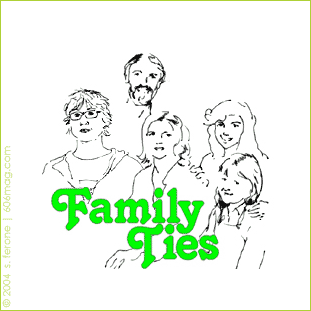

| |
 |
|
| |
|
|
Have you ever wanted to be someone else? When you were growing up, everyone had that person they thought had every quality they ever wanted in a human being. For some, it's their father and for others, it might be a celebrity. In a brief period of my life growing up I also had one. That person was Alex P. Keaton from Family Ties . I don't quite know why I identified with him, but for a small part of my life, he was the most amazing human being that ever existed.
Maybe it was his quick wit or his entrepreneurial attitude, or maybe I just wanting to be a big brother to someone named Ming. I wanted to be Alex P. Keaton. I remember never being quite as emotional before the age of 10 as I was when I watched the last episode of Family Ties . I even went as far as telling people at school my real name was Alex Ryan Marshall.
If you ask anyone who know me, that is absolutely true. I can remember signing homework as Alex R. Marshall. Teachers would ask why I used a different name on my homework and I would fully explain that I casually went by my middle name. Still, to this day, can't figure out why I thought my story was so air-tight considering my mother was a teacher at the same school.
We had a lot in common. I figure the only way to show this is a point-by-point comparison of Ryan Marshall and Alex P. Keaton:
| Keaton |
Marshall |
- Got straight As and went to Oxford
- Graduated second in his class
- Excellent stock portfolio
- Managed Jennifer's all-girl band
- Hippie parents
- Republican
- Friend named Skippy
- Dated a psychologist
- Overachiever in everything he does
|
- Got an A in math
- Graduated
- Saved $200 once to buy a Nintendo
- Used to work at a Domino's managed by a girl named Jenny
- Non-hippie parents
- Utilitarian
- Dog named Sparky
- Dated a stripper
- Achieved just over the bare minimum
|
| |
|
You see, we should have been related. Blablabla funny ending.
|